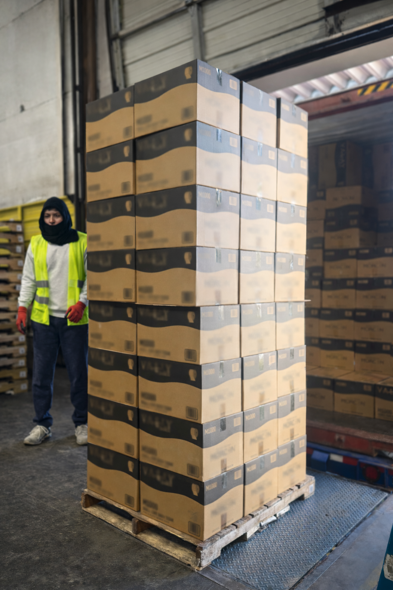
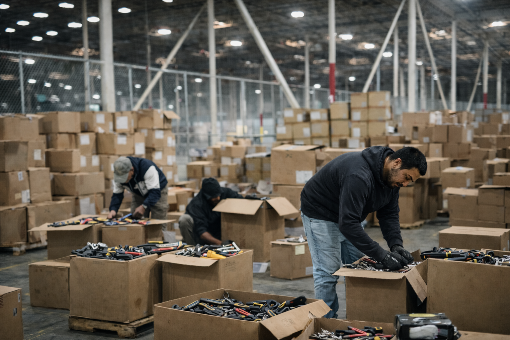

Trained Teams
Experienced workers prepared for high-volume freight and strict dock safety.
No Delays. No Excuses.
Reliable crews that keep freight moving from start to finish.
NC + SC coverage Fast response Fully insured
 dark.webp)
We combine trained crews, clear communication, and repeatable workflows so inbound and outbound freight keeps moving without disruption.
Experienced workers prepared for high-volume freight and strict dock safety.
Consistent unload, sort, and staging processes built for speed and accuracy.
A team that adapts quickly to volume swings and communicates clearly every shift.

Unload, receive, sort, and stage freight with clean handoffs into storage.

Load planning, pallet preparation, and dock-ready execution for fast departures.

Sanitation, pallet handling, and customized labor support for special workflows.
We review freight profile, dock conditions, and shift priorities before work begins.
Teams unload, sort, and stage freight with clear accountability and quality checks.
We adjust quickly to volume changes so your operation stays on schedule.